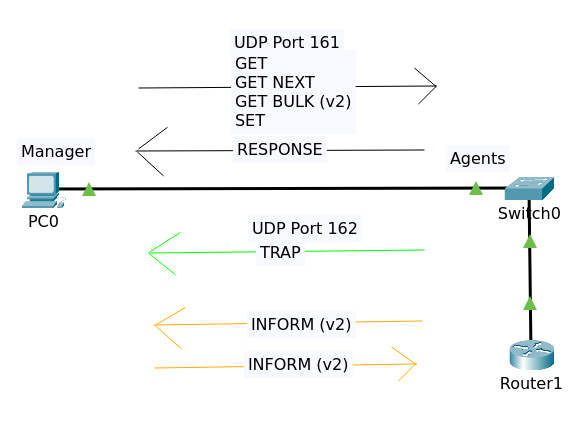

IT-Technik Netzwerkgrundlagen
SNMP ist ein weitverbreitetes, weil einfaches Protokoll zur

Abbildung 1: Funktionen des SNMP
Die MIB ist eine Art simpler Datenbank in der Informationen, wie die IP oder der Status von Netzwerkschnittstellen von Netzwerkgeräten, wie Routern oder Switches gespeichert sind.
Diese Informationen nennt man Managed Objects. Diese sind in einer standardisierten Baumstruktur gespeichert. Jedes Managed Object kann über einen Object Identifier (OID) identifiziert werden. Dies ist eine Zahlenkette (z. B. .1.3.6.1.2.1.2.2.1.7) der ein Name zugeordnet ist (z. B. .iso.org.dod.internet.mgmt.mib-2.interfaces.ifTable.ifEntry.ifAdminStatus).
Folgende Nachrichten kann ein SNMP-Agent selbstständig senden:
| Bedeutung | Nachricht | Wert |
|---|---|---|
| Kaltstart | caldStart | 0 |
| Warmstart | warmStart | 1 |
| Verbindung unterbrochen | linkDown | 2 |
| Verbindung hergestellt | linkUp | 3 |
| Authentifiierungsfehler | authentificationFailure | 4 |
| EPG-Nachbar verloren | epgNeighborLoss | 5 |
| firmenspezifisch | enterpriseSpecific | 6 |